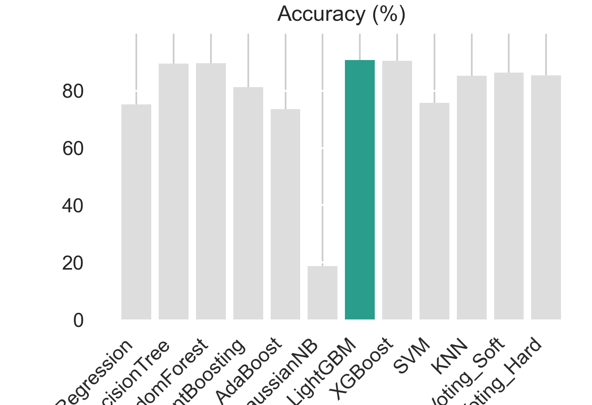

Why I stopped trusting accuracy alone
Aug 20, 2026
This project started with a number that looked great and turned out to mean almost nothing. I was building a stroke-risk prediction model, running a batch of classifiers over the same medical dataset — Logistic Regression, Random Forest, AdaBoost, GaussianNB, LightGBM, XGBoost, a couple of voting ensembles — and one of them came back over 90% accurate. My first reaction was relief. My second, a few minutes later, was suspicion.
The dataset is heavily imbalanced — most people in it didn't have a stroke. So a model can hit 90%+ accuracy by mostly just predicting "no stroke" and coasting on the fact that it's usually right by default. That's not a working model, that's a model that's found a shortcut, and in healthcare a shortcut like that is actively dangerous — it's confidently wrong exactly where being wrong costs the most.
So I stopped looking at accuracy as the headline number and started looking at everything alongside it: F1, precision, recall, ROC-AUC, PR-AUC, across every model I'd trained.

Accuracy across every model tested — the chart that made me distrust the leaderboard.
Once I lined all the metrics up side by side, the picture changed completely. Models that looked nearly identical on accuracy were wildly different on recall — some were catching real risk cases, others were quietly missing most of them while still scoring well on paper. The whole point of a hybrid explainable framework, which is what this project became, is that it doesn't let a single flattering metric hide what a model is actually doing. It has to show its reasoning, not just its score.
The bigger lesson traveled with me past this one project: whenever a result looks a little too clean, that's exactly when it deserves the closest look, not the least.